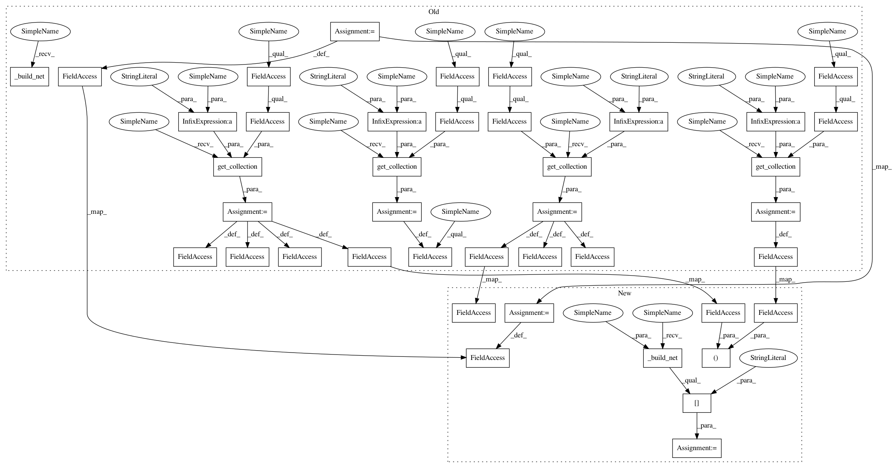

d22bf94eddbff3cfc6ceb7bf3ac8cb4c5ac83c5d,contents/10_A3C/A3C_continuous_action.py,ACNet,__init__,#ACNet#Any#Any#,45
Before Change
if scope == GLOBAL_NET_SCOPE: // get global network
with tf.variable_scope(scope):
self.s = tf.placeholder(tf.float32, [None, N_S], "S")
self._build_net()
self.a_params = tf.get_collection(tf.GraphKeys.TRAINABLE_VARIABLES, scope=scope + "/actor")
self.c_params = tf.get_collection(tf.GraphKeys.TRAINABLE_VARIABLES, scope=scope + "/critic")
else: // local net, calculate losses
with tf.variable_scope(scope):
self.s = tf.placeholder(tf.float32, [None, N_S], "S")
self.a_his = tf.placeholder(tf.float32, [None, N_A], "A")
self.v_target = tf.placeholder(tf.float32, [None, 1], "Vtarget")
mu, sigma, self.v = self._build_net()
td = tf.subtract(self.v_target, self.v, name="TD_error")
with tf.name_scope("c_loss"):
self.c_loss = tf.reduce_mean(tf.square(td))
with tf.name_scope("wrap_a_out"):
mu, sigma = mu * A_BOUND[1], sigma + 1e-4
normal_dist = tf.contrib.distributions.Normal(mu, sigma)
with tf.name_scope("a_loss"):
log_prob = normal_dist.log_prob(self.a_his)
exp_v = log_prob * td
entropy = tf.stop_gradient(normal_dist.entropy()) // encourage exploration
self.exp_v = ENTROPY_BETA * entropy + exp_v
self.a_loss = tf.reduce_mean(-self.exp_v)
with tf.name_scope("choose_a"): // use local params to choose action
self.A = tf.clip_by_value(tf.squeeze(normal_dist.sample(1), axis=0), A_BOUND[0], A_BOUND[1])
with tf.name_scope("local_grad"):
self.a_params = tf.get_collection(tf.GraphKeys.TRAINABLE_VARIABLES, scope=scope + "/actor")
self.c_params = tf.get_collection(tf.GraphKeys.TRAINABLE_VARIABLES, scope=scope + "/critic")
self.a_grads = tf.gradients(self.a_loss, self.a_params)
self.c_grads = tf.gradients(self.c_loss, self.c_params)
with tf.name_scope("sync"):
with tf.name_scope("pull"):
self.pull_a_params_op = [l_p.assign(g_p) for l_p, g_p in zip(self.a_params, globalAC.a_params)]
self.pull_c_params_op = [l_p.assign(g_p) for l_p, g_p in zip(self.c_params, globalAC.c_params)]
with tf.name_scope("push"):
self.update_a_op = OPT_A.apply_gradients(zip(self.a_grads, globalAC.a_params))
self.update_c_op = OPT_C.apply_gradients(zip(self.c_grads, globalAC.c_params))
def _build_net(self):
w_init = tf.random_normal_initializer(0., .1)
After Change
if scope == GLOBAL_NET_SCOPE: // get global network
with tf.variable_scope(scope):
self.s = tf.placeholder(tf.float32, [None, N_S], "S")
self.a_params, self.c_params = self._build_net(scope)[-2:]
else: // local net, calculate losses
with tf.variable_scope(scope):
self.s = tf.placeholder(tf.float32, [None, N_S], "S")
self.a_his = tf.placeholder(tf.float32, [None, N_A], "A")
self.v_target = tf.placeholder(tf.float32, [None, 1], "Vtarget")
mu, sigma, self.v, self.a_params, self.c_params = self._build_net(scope)
td = tf.subtract(self.v_target, self.v, name="TD_error")
with tf.name_scope("c_loss"):
In pattern: SUPERPATTERN
Frequency: 3
Non-data size: 41
Instances
Project Name: MorvanZhou/Reinforcement-learning-with-tensorflow
Commit Name: d22bf94eddbff3cfc6ceb7bf3ac8cb4c5ac83c5d
Time: 2017-08-13
Author: morvanzhou@gmail.com
File Name: contents/10_A3C/A3C_continuous_action.py
Class Name: ACNet
Method Name: __init__
Project Name: MorvanZhou/Reinforcement-learning-with-tensorflow
Commit Name: d22bf94eddbff3cfc6ceb7bf3ac8cb4c5ac83c5d
Time: 2017-08-13
Author: morvanzhou@gmail.com
File Name: contents/10_A3C/A3C_discrete_action.py
Class Name: ACNet
Method Name: __init__
Project Name: MorvanZhou/Reinforcement-learning-with-tensorflow
Commit Name: d22bf94eddbff3cfc6ceb7bf3ac8cb4c5ac83c5d
Time: 2017-08-13
Author: morvanzhou@gmail.com
File Name: contents/10_A3C/A3C_RNN.py
Class Name: ACNet
Method Name: __init__
Project Name: MorvanZhou/Reinforcement-learning-with-tensorflow
Commit Name: d22bf94eddbff3cfc6ceb7bf3ac8cb4c5ac83c5d
Time: 2017-08-13
Author: morvanzhou@gmail.com
File Name: contents/10_A3C/A3C_continuous_action.py
Class Name: ACNet
Method Name: __init__